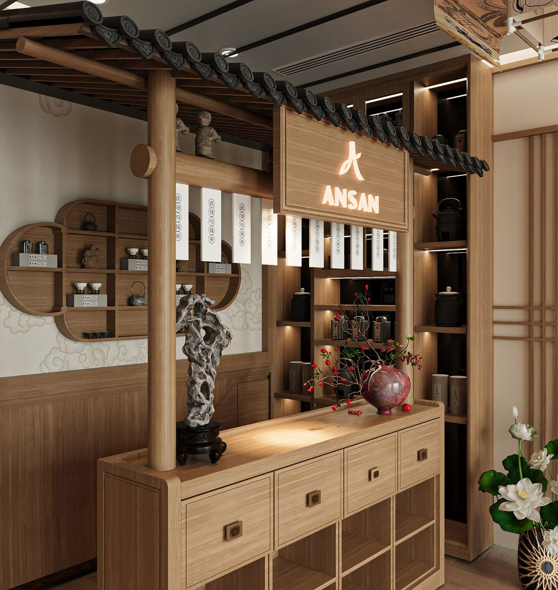
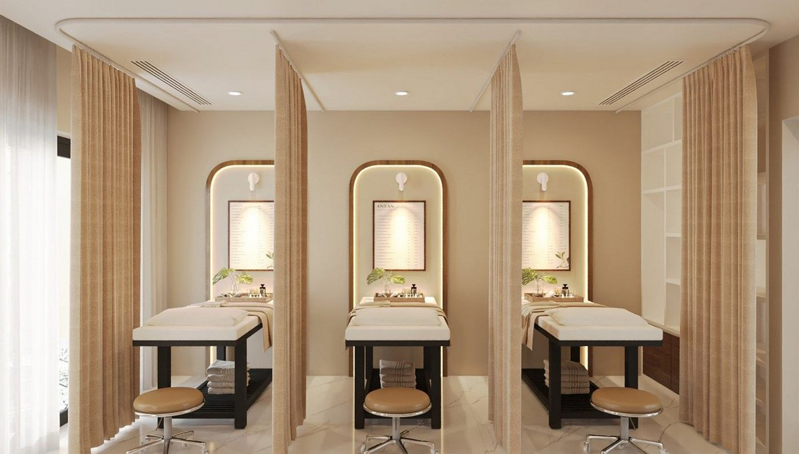

Ảnh phối cảnh thiết kế
Ảnh phối cảnh thiết kế
Ansan Dưỡng Sinh Cơ sở mẫu
Ansan
Nguyễn Xiển
Điểm mẫu đầu tiên theo mô hình hai tầng Tâm — Thân. Khai trương tháng 11/2026 (tháng 10 âm lịch).
Thông tin cơ sở
Ghé thăm
- Địa chỉ
- L7-18 KĐT mới Đại Kim, P. Định Công, Hà Nội
- Hotline
- 0936 262 499
- Giờ mở cửa
- Đang cập nhật
- Workshop
- Tối thứ Ba, thứ Sáu
- Quy mô
- Tầng 1 phòng trà ~20 chỗ · Tầng 2 sáu giường · ban công ngâm chân
Không gian
Tâm — Thân
Thiết kế theo ngôn ngữ Tinh — Thần — Khí: gỗ, mái ngói, khung song, ánh sáng ấm, cây xanh, mùi thảo mộc.





Ảnh phối cảnh thiết kế, có thể khác thực tế.
Đội ngũ
9 người
Lễ tân, trà sư và kỹ thuật viên được đào tạo theo cùng một chuẩn: quy trình 4 bước và menu 10 liệu trình.
Ảnh và giới thiệu đội ngũ cơ sở sẽ đặt tại đây khi có ảnh chụp thật và sự đồng ý của từng người.
Vai trò cơ sở mẫu
Nơi chuẩn hoá,
nơi tham quan
Cơ sở mẫu để chuẩn hoá quy trình, đào tạo và lấy số liệu vận hành thực tế; cũng là nơi đối tác tham quan trước khi hợp tác mở điểm.
Dịch vụ mang tính chăm sóc, hỗ trợ; không thay thế chẩn đoán và điều trị y khoa. Hiệu quả tuỳ thể trạng mỗi người.